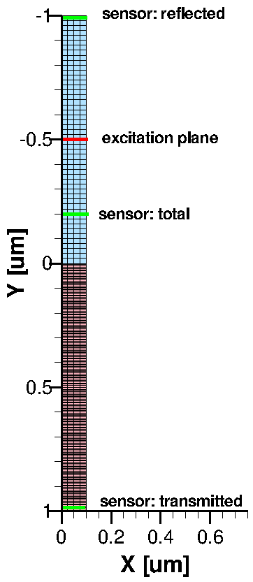

Sentaurus Device Electromagnetic Wave Solver
2. Basics
2.1 Introduction
2.2 General Notes on the Command File
2.3 Globals Section
2.4 ComplexRefractiveIndex Section
2.5 Boundary Section
2.6 PlaneWaveExcitation Section
2.7 Plot Section
2.8 Extractor Section
2.9 Sensor Section
2.10 Detector Section
2.11 Postprocessing
Objectives
- To become familiar with the basic capabilities of EMW.
2.1 Introduction
This section introduces the most common features of EMW in the context of a simple 2D silicon–air structure, where you will calculate the optical generation profile in silicon and the reflection. The structure is shown in Figure 1.

Figure 1. Silicon–air structure of the investigated example, showing the tensor grid.
Click to view the command file emw_eml.cmd.
The complete project can be investigated from within Sentaurus Workbench in the directory Applications_Library/GettingStarted/emw/simple2d.
For your convenience, a similar project has been created for the 3D case. The complete project can be investigated from within Sentaurus Workbench in the directory Applications_Library/GettingStarted/emw/simple3d.
2.2 General Notes on the Command File
An EMW command file consists of several command sections of the form Section {...}, with each section describing a specific aspect of the simulation. Inside a section, each command keyword has the form keyword = value, for example:
* Plot the absolute value of the electric field at the end of the simulation
Plot {
Name = "n@node@_Eabs"
Quantity = {AbsElectricField, AbsMagneticField, Region}
TickStep = 300
StartTick = 100
EndTick = 800
FinalPlot = yes
}
Keywords are case insensitive, but identifiers such as
region names and materials are surrounded by double quotation marks
and are case sensitive.
Lists are defined in braces with their items separated by a comma.
Each command must be on a single line; only list items can be wrapped before
or after the comma.
Comments are indicated by the first character on a line being # or *.
Typically, an EMW command file consists of the following sections:
- Globals
- ComplexRefractiveIndex
- DispersiveMedia
- Boundary
- PlaneWaveExcitation
- Plot
- Extractor
- Sensor
- Monitor
- Detector
In general, the order of the sections in the command file is arbitrary. However, it is recommended that you maintain the above order because it simplifies navigation looking for a particular parameter. Each command section is described in the following sections sequentially, in the context of the 2D silicon–air structure example.
2.3 Globals Section
The Globals section contains all the global parameter settings for the simulation, such as input and output file names, which kernel to use, how many threads should be used for the calculation, and some limits on the simulation time or the maximum number of time steps.
As a minimal requirement, you must specify GridFile = "myGrid_msh.tdr" to indicate the tensor grid to be used in the EMW simulation.
In addition, typically, the parameter file containing the refractive index data and the log file are specified by the keywords ParameterFile and LogFile, respectively. A result file (.plt) is used when global values must be stored, such as the integrated absorbed photon density in a certain volume or the photon flux through a surface. As multiple Plot sections are allowed, the plot file names are defined in the corresponding Plot sections using the keyword Name.
The Courant criteria determine the stable time step for advancing the light propagation in FDTD simulations. It links the smallest edge length of the grid to the largest possible time step. For dispersive media, so for regions where κ > n, The Courant criteria are not strictly fulfilled. Therefore, the simulation might require an even smaller time step as calculated by the Courant criteria to converge. To achieve this, the time step can be further reduced by a user-specified factor using the keyword OverSampling.
FDTD simulations can be very time consuming. Therefore, it is a good idea to limit the maximum number of allowed time steps to be calculated by TotalTimeSteps or the total simulation time itself by TotalSimulationTime (in seconds).
If you want to save additional disk space, use CompressTDR=Yes to reduce the file size up to a factor of two.
2.4 ComplexRefractiveIndex Section
You can define the optical parameters as a complex refractive index (CRI) in the material parameter file. EMW uses the same CRI library as Sentaurus Device. Therefore, the same parameter file as for Sentaurus Device can be used. Then, the optical data is read from the ComplexRefractiveIndex section:
Material = "Gas" {
ComplexRefractiveIndex {
Formula = 0
n_0 = 1
k_0 = 0
}
}
The CRI offers different dependencies of the refractive index. The most commonly used is wavelength dependency. The dependencies can be controlled materialwise or regionwise by specifying multiple ComplexRefractiveIndex sections with the additional keyword Material or Region. In the following example, for the region "ambient", you use a constant refractive index but, for the material "Silicon", you use a wavelength dependency for both the refractive index (Real) and the extinction coefficient (Imag):
ComplexRefractiveIndex {
Region = "ambient"
}
ComplexRefractiveIndex {
Material = "Silicon"
WavelengthDep = {Real,Imag}
}
If neither Material nor Region is specified, the settings apply to all regions.
2.5 Boundary Section
For each border of the simulation domain, boundary conditions (BCs) must be specified. The border of the domain can be addressed by specifying the keyword Sides containing a list of X, Y, Z, or Xmin, Xmax, and so on.
In this example, you have an infinite silicon–air interface, so you can use periodic BCs in the horizontal direction. In addition, to investigate oblique incident light, you can choose the PeriodicOblique BC:
Boundary {
Type = PeriodicOblique
Sides = {X}
}
In the vertical direction (Sides = {Y}), you can use absorbing BCs, where the best damping or absorption is achieved with the convolutional perfectly matched layer (CPML) by setting Type = CPML. EMW provides a set of default parameters that are suitable for the most common situations in semiconductor devices. For more details, see the Sentaurus™ Device Electromagnetic Wave Solver User Guide, "Specifying Parameters of CPML Boundary Condition".
2.6 PlaneWaveExcitation Section
The PlaneWaveExcitation section summarizes everything related to the plane wave excitation:
PlaneWaveExcitation {
PlaneY = -0.5
Theta = 0
Psi = 0
Wavelength = @<1000.*wavelength>@ * nm
Intensity = 0.1 * W/cm2
Nrise = 4 * number of signal periods until full power
}
The excitation plane must be axis aligned and cuts through the entire simulation domain. It is defined by specifying a plane perpendicular to a coordinate axis (PlaneY) and a coordinate value where the plane intersects with the axis (see the red line in Figure 1).
The direction of the plane wave – the k-vector – is defined by the angles Theta and Phi. A third angle Psi can be used to define the direction of the E-vector or the polarization plane (see Figure 2).
{kind=link}
Figure 2. Angles for defining 3D excitation. (Click image for full-size view.)
In two dimensions, the 3D notation shown in Figure 2 is fully supported. However, if only Theta is specified and Phi is omitted, the 2D specification is used, where Theta is counted from the positive y-axis clockwise (see Figure 3). The 2D and 3D angular settings can be reviewed in the log file.
{kind=link}
Figure 3. Angle and polarization definitions for 2D excitation. (Click image for full-size view.)
To simplify the setup, EMW can automatically set the position of the excitation plane as well as the angles Theta and Phi, depending on the coordinate system orientation and the simulation dimension. This is demonstrated in the simple3d example:
PlaneWaveExcitation {
Direction = FromBottom
Wavelength = @<1000.*wavelength>@ * nm
Intensity = 0.1 * W/cm2
Nrise = 4 * number of signal periods until full power
}
The chosen values are printed to the log file:
Excitation plane has been set to 'PlaneZ = -9.6000e-01 [um]' (auto set) Excitation angles in 3d specification: Theta = 0.0000e+00 [deg] (auto set) Phi = 0.0000e+00 [deg] (auto set) Psi = 45 [deg] (auto set)
Note that you still can change settings on top of this, for example, setting theta=30 to achieve oblique incidence.
The intensity and wavelength of the plane wave are set by specifying the Intensity in W/cm2 and Wavelength in nanometer. Alternatively, the E-field Amplitude in V/m and Frequency in Hz can be used.
Finally, for the harmonic signal, the keyword NRise specifies the number of signal periods before the full amplitude is reached. This is an important keyword to achieve good convergence. Too small a value introduces artificial higher frequencies (think of a step function whose Fourier transformation consists of a very broad spectrum), which must vanish before steady state is reached and, eventually, prevent the system from converging. On the other hand, too high a value increases simulation time, because a larger rise time results in a longer total calculation time. Typical values are between 4 and 15 in practice.
2.7 Plot Section
The Plot section controls the plotting of time-dependent quantities such as the E-field and H-field, or the Poynting vector:
Plot {
Name = "n@node@_Eabs"
Quantity = {AbsElectricField, AbsMagneticField, Region}
TickStep = 300
StartTick = 100
EndTick = 800
FinalPlot = yes
}
As multiple Plot sections are allowed in the command file, each Plot section has a name, which is used as the file name for the plot file, for example, Name = "n1_Eabs" generates a plot file n1_Eabs_eml.tdr.
The quantities that will be included in the plot can be selected with Quantity = {<identifier>, ... }. In the above example, the electric and magnetic field magnitudes are plotted. The quantity Region stores the region boundaries and their names in the plot file for better orientation during visualization.
When the plot is to be created, it can be controlled with the keywords StartTick, EndTick, and TickStep. In the example, a plot is generated starting at the 100th time step, then every 300 time steps until the 800th time step is reached, that is, at 100, 400, 700. The created plot files have an index appended to the file name (n1_Eabs_eml_000.tdr).
If FinalPlot = yes is specified, a plot file will be created at the end of the simulation.
In summary, the above Plot section generates several plot files with the names n4_Eabs_eml_000.tdr, n4_Eabs_eml_001.tdr, and n4_Eabs_eml_002.tdr as well as the final plot file n4_Eabs_eml.tdr. The plot files can be viewed with Sentaurus Visual (see the Sentaurus Visual module).
2.7.1 Notes on 3D Plotting
As EMW tensor grids can have hundreds of millions of vertices, the plotting can require substantial time. Therefore, you have the following options:
- Restrict the plot domain.
- Interpolate results to a coarser mixed-element grid.
- Define axis-aligned cuts.
To restrict the plot domain, a user-defined box or region can be defined to reduce the amount of stored data. The box is defined by specifying two opposite corners of a rectangle using BoxCorner1 and BoxCorner2. For convenience, the minimum and maximum coordinate values of the domain boundaries can be retrieved with the keywords min and max. For example:
Plot {
Name = "n@node@_Si"
BoxCorner1 = {min, 0, 0}
BoxCorner2 = {max, max, 0}
Quantity = {AbsElectricField, Region}
}
In three dimensions, you can specify axis aligned cuts by using on of the keywords PlaneX, PlaneY, PlaneZ.
The following Plot section, for example, generates an x-cut of the electric field at x = 0.05 and saves it to a file n4_xcut_eml.tdr:
Plot {
Name = "n@node@_Ex"
Quantity = {AbsElectricField, Region}
PlaneX = 0.05
FinalPlot = yes
}
Another possibility to reduce the amount of stored data is to plot the result variables on a coarser mixed-element grid, instead of the very dense tensor grid. This can be activated by providing a mixed-element grid file with GridFile in the Plot section. An example is provided in Section 3. Integrating EMW in Sentaurus Workbench Tool Flow.
2.8 Extractor Section
The Extractor section, very similar to plots, extracts spatial device quantities and writes it to a TDR file. However, the main difference is that extractors extract quantities that require heavy postprocessing, for example, time-averaged quantities such as the time-averaged PowerFluxDensity, AbsorbedPhotonDensity, and OpticalGeneration. Like plots, the output can be restricted to certain regions or boxes, it can be evaluated for axis-aligned cuts only, and it can be written on a coarse mixed-element grid instead of a tensor grid.
The most important quantity, the optical generation, is covered by AbsorbedPhotonDensity. In the following example, the absorbed photon density profile in the silicon can be computed using the syntax:
Extractor {
Name = "n@node@_g"
Quantity = {AbsorbedPhotonDensity, Region}
}
The result is stored in the n4_g_eml.tdr file and can be viewed in a similar way to the plot files in Sentaurus Visual.
Do not extract too large 3D tensor grids as this might consume considerable amounts of time. Instead, use cuts or interpolate to a mixed-element grid. See Section 2.7.1 Notes on 3D Plotting.
2.9 Sensor Section
Sensors provide users with the ability to measure integrated values of the photon flux through user-defined areas or the absorbed photon density in selected volumes. The result is a scalar value and is written to the result file. Similar to the excitation, planes can be defined with PlaneY. Integration volumes can be defined with BoxCorner1 and BoxCorner2 in analogy to the Plot section. In addition, a region (or material) of the tensor grid, which does not necessarily need to be cuboid, can be used as the identifier for volume integration.
The region (or material) definition requires more runtime. So wherever possible, use boxes as the integration regions.
As multiple sensors are allowed, sensors must be named with the keyword Name. The quantity to be measured is set with Quantity. The sensor returns the integrated value, or the averaged value, or both (for example, Mode = {Integrate, Average}).
For 2D simulations, the third dimension is assumed to be 1 μm.
The following lines from the simple2d example demonstrate how to calculate the reflection of the structure. Therefore, the sensor is defined above the excitation plane at the upper boundary in the scattered field region (see Figure 1):
Sensor {
Name = "reflected"
Quantity = PhotonFluxDensity
PlaneY = min
Mode = {Integrate}
}
This returns the number of reflected photons per second. However, usually, you are interested in the reflection coefficient, so you must divide the number of reflected photons by the number of incident photons.
As the number of incident photons is not directly accessible as in the total-field scattered-field excitation, you only have (Total Field = Incident + Reflected) and (Scattered Field = Reflected). However, knowing the total flux, you can subtract the scattered flux to extract the incident flux. For this, you can define a sensor solely between the excitation plane and the silicon surface to measure the total flux (see Figure 1):
Sensor {
Name = "total"
Quantity = PhotonFluxDensity
PlaneY = -0.2
Mode = {Integrate}
}
The results are accessible in the log file and the result file (.plt), and can be viewed and further processed in Sentaurus Visual.
To compute the transmission coefficient, you can add, in a similar way as for the reflection, an additional sensor at the bottom of the silicon (see Figure 1).
To calculate the absorption, you can define a sensor that encloses the entire silicon region, but this time, integrating the absorbed photon density:
Sensor {
Name = "absorbed"
Quantity = AbsorbedPhotonDensity
BoxCorner1 = {min, min, 0}
BoxCorner2 = {max, max, 0}
Mode = {Integrate}
}
For volume integration, it is also possible to define box corners and a region at the same time. In that case, the keyword Domains defines how the integration volumes will be connected. They can be evaluated as United, or Intersecting, or Separate.
The following Sensor section in example simple2d performs the integration in the substrate region, but only if it is inside a rectangle of (min,min)–(0.05,max), where min and max refer to the domain boundaries:
Sensor {
Name = "intersected"
Quantity = AbsorbedPhotonDensity
Region = {"substrate"}
BoxCorner1 = {min , min, 0}
BoxCorner2 = {0.05, max, 0}
Domains = Intersecting
Mode = {Integrate}
}
As it is very common to calculate reflection, transmission, and absorption (RTA) in an EMW simulation, EMW offers a shortcut for setting up the required sensors for RTA and total field, and for performing the postprocessing. Specifying the command section RTA {} will automatically add the previously mentioned sensors, calculate RTA and the sum of it (RTA=R+T+A), and output the results to the EMW log as DoE result parameters, so Sentaurus Workbench can pick them up for its table of simulation results. In addition, the results are written to the result file. See the simple3d example.
You can further fine-tune the RTA calculation, for example, specifying which results to plot to the Sentaurus Workbench table, by using the keyword Log. For example, the following section plots only R, T, and A, and their sum (RTA).
RTA {
Log = {R,T,A,RTA}
}
The RTA section requires the Direction keyword to be specified in the PlaneWaveExcitation section, to decide on which boundary to place the reflection and tranmission sensors.
Like the Plot section, Sensor sections and the RTA section can be evaluated not only at the end, but also during time-stepping. Therefore, you can observe the transient evolution of the sensor values, for example, to investigate convergence.
To activate transient evaluation, specify StartTick and optionally TickStep:
RTA {
StartTick = 0
}
2.10 Detector Section
The purpose of the detector is to terminate the simulation if the simulation fulfills certain criteria. For harmonic excitation, the simulation terminates if a time-harmonic steady-state is reached, that is, if the maximum deviation of the field compared to the field in the immediately preceding period is lower than the specified Tolerance.
In this case, you can set the evaluation region of the detector for the entire simulation domain, with Tolerance set to 1e-3:
Detector {
Tolerance = 1e-3
}
During an EMW simulation, the Detector section writes the maximum deviation of the entire Detector domain to the log file and to the result file. Sometimes, it can be useful to monitor the convergence behavior visually to have a better understanding of the current state of the simulation and to decide whether an increased number of time steps would significantly reduce the maximum deviation and, therefore, lead to more accurate results.
The maximum deviation can be plotted over time or over the number of time steps (denoted as TickStep). The data is saved continuously in the ResultFile specified in the Globals section of the command file and can be plotted in Sentaurus Visual. Clicking the Reload button in Sentaurus Visual during an EMW simulation adds any new data points computed in the intervening time to the existing curve and updates the plot accordingly.
An example of how to plot maximum deviation versus time steps can be investigated from within the project Applications_Library/GettingStarted/emw/simple2d in the svisual_vis.tcl command file.
In this example, the convergence monitoring plot is generated by selecting the Sentaurus Visual node and then clicking the Run Selected Visualizer Nodes Together toolbar button of Sentaurus Workbench. To refresh the plot with new data points, choose File > Reload All, or choose File > Reload Selected, in Sentaurus Visual.
Figure 4 shows a plot of the maximum deviation versus time steps for tolerance=0.001 in the Detector section.
{kind=link}
Figure 4. Convergence monitoring. (Click image for full-size view.)
In addition to the maximum deviation, you can plot the transient evolution of sensors, like R, T, and A as demonstrated in the example project simple3d. Figure 5 shows the maximum deviation and tolerance as before, but in addition, on the right axis, R, T, and A. See how reflection converges quite fast as the light just needs to travel to the Si–air interface and back. There is no further reflecting in this device. For the transmission (and absorption), it takes a bit longer, as the wave front has to reach the rear side of the silicon.
{kind=link}
Figure 5. Transient evolution of R, T, and A. (Click image for full-size view.)
In addition, the quantity 1 – (R+T+A) (labeled as 1-RTA) is plotted on the left axis. This quantity is a measure for the overall accuracy of your simulation and ideally equals 0. It is mainly influenced by the mesh and when the simulation is stopped. So, if the value unsatisfactorily deviates from 0, it is an indication to use a finer mesh or to run the simulation for a longer time, which reduces the tolerance of the detector.
2.11 Postprocessing
FDTD simulations are usually very time consuming and produce huge amounts of data, which are difficult to handle afterwards. Imagine you ran a FDTD simulation for a few hours and, at the end, you realize that you would like to investigate the E-field in an additional cut or to use an additional sensor to integrate the absorbed photon density for a different region.
In this case, the postprocessing capability of EMW can be very helpful because it allows you to save the absorbed photon density and power flux density together with the region information at the end of a FDTD simulation in a save file. After the simulation, this save file can be loaded into EMW, applying arbitrary extractors and sensors to it without having to redo the calculation.
To demonstrate the principle of postprocessing, the simple2d project described above is chosen and split into two EMW tool instances:
The first tool instance emw performs the FDTD calculation, without applying any extractor or sensor. It simply saves the results in a save file by specifying a Save section:
Save {
Name = "@save@"
Quantity = {AbsorbedPhotonDensity, PowerFluxDensity}
}
The save file name is specified with the Sentaurus Workbench file reference @save@, which expands to n4_save_eml.tdr.
A silver region has been added to one end of the silicon and is explicitly treated as a dispersive medium:
DispersiveMedia {
Material = {"Silver"}
Model = SingleDipoleDrude
ModelParameters = ComputeFromComplexRefractiveIndex
InterfaceAveraging = yes
}
The SingleDipoleDrude model used here computes a single-pole fitting for silver at the defined excitation wavelength. The wavelength-dependent n & k values are read directly from the NumericalTable in the ComplexRefractiveIndex section of the material parameter file by specifying ModelParameters = ComputeFromComplexRefractiveIndex. With InterfaceAveraging = yes, a weighted average of the dielectric function in the frequency domain is used at the silicon–silver interface, which helps to improve convergence and accuracy during runtime and is typically recommended when using dispersive models.
Click to view the command file emw_eml.cmd.
The second tool instance emwPostProcess loads the save file by specifying LoadFile in the Globals section:
Globals {
LoadFile = "@load@"
ResultFile = "@plot@"
LogFile = "@log@"
}
Again, a Sentaurus Workbench file reference is used to specify the file name; @load@ expands to n4_save_eml.tdr. Subsequently, any Extractor or Sensor sections are evaluated as for a standard EMW simulation.
For postprocessing, apart from the Globals section, only Extractor and Sensor sections are allowed.
In this particular example, the absorbed photon density is extracted and sensors are placed as for the simple2d project to extract reflection, transmission, and absorption.
Click to view the command file emwPostProcess_eml.cmd.
The complete project can be investigated from within Sentaurus Workbench in the directory Applications_Library/GettingStarted/emw/simple2d-postprocess.
Copyright © 2022 Synopsys, Inc. All rights reserved.